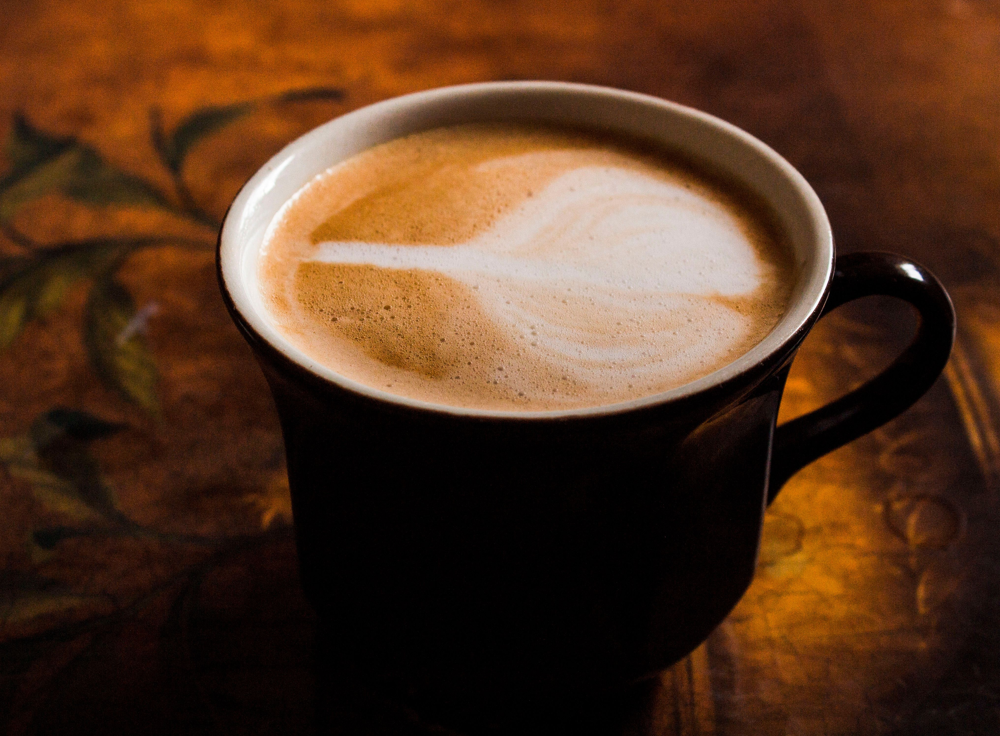
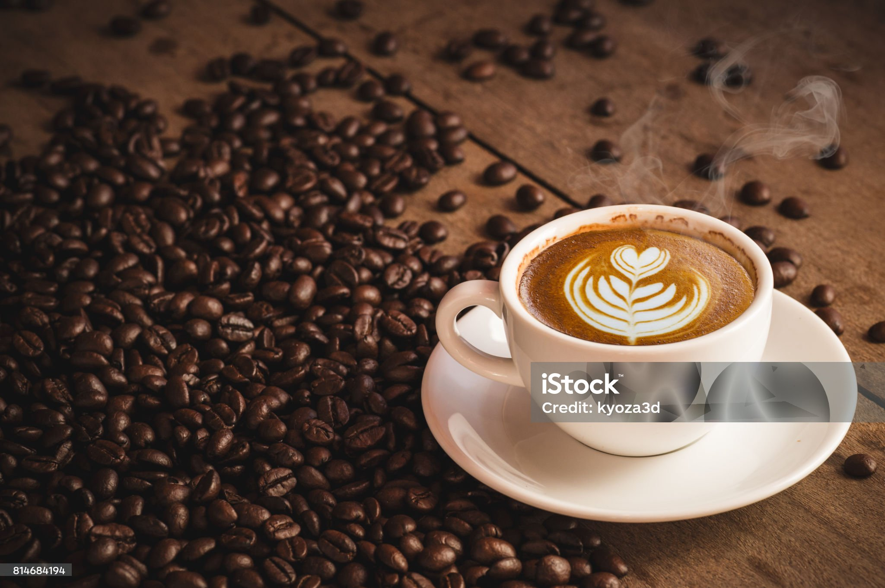

Our Coffee Collection

FILTER COFFEE
This strong decoction is mixed with heated full-fat milk and sugar (often to taste). It is vigorously poured between a metal tumbler and a broad saucer (dabarah) to aerate it, creating its signature bubbly, frothy top.

CAPPUCCINO COFFEE
A cappuccino is a beloved espresso-based hot coffee drink made with layering of espresso, steamed milk, and milk foam on top.
ESPRESSO COFFEE
Brewed coffee beans from a professional espresso machine. A thick layer of cream on top of steamed milk, made by the frother on the espresso machine.

LATTE COFFEE
When the espresso and steamed milk are mixed together, it creates a creamy texture, permitting it a more subtle flavour.